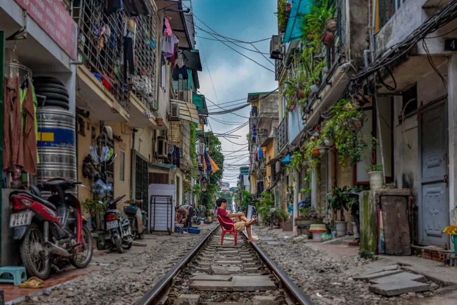
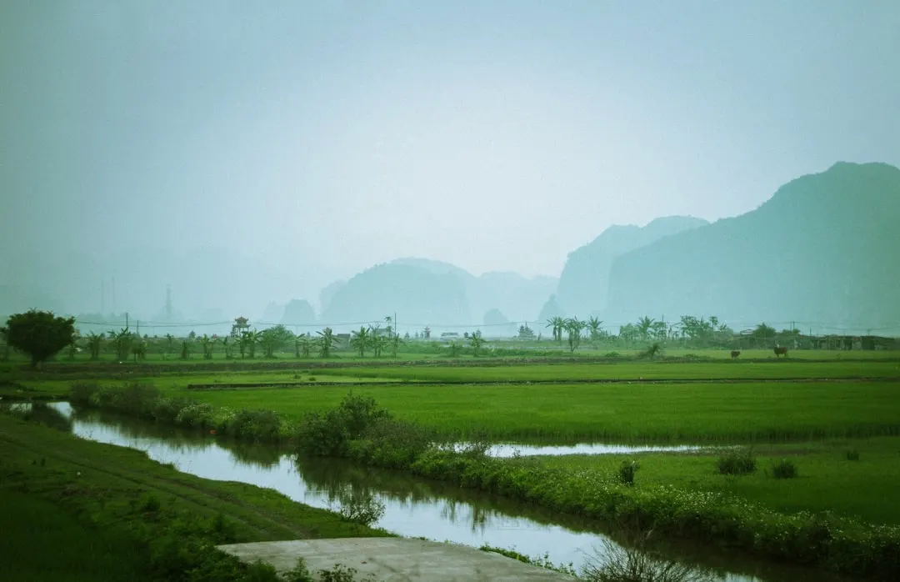

01 · Pourquoi y aller
Quels sont les attraits du Vietnam ?
Le Vietnam est un pays aux mille visages, où les paysages urbains s'allient aux paysages naturels. Les visiteurs peuvent explorer les rues animées de Hanoï et de Hô Chi Minh-Ville, découvrir les plages de sable blanc de Nha Trang et de Da Nang, ou se perdre dans les rizières et les villages traditionnels de la campagne.
La cuisine vietnamienne, riche et variée, est également un atout majeur du pays. Les plats traditionnels, tels que les nems, les phô et les banh mi, sont à déguster dans les restaurants et les marchés locaux.

02 · Quand partir
Quelle est la meilleure période pour visiter le Vietnam ?
La meilleure période pour visiter le Vietnam dépend de la région que l'on souhaite explorer. Cependant, Septembre est considéré comme l'une des meilleures périodes pour visiter le pays, en raison de la météo agréable et de la faible affluence touristique. Les températures sont chaudes mais supportables, et les précipitations sont rares.
En Septembre, les festivals traditionnels vietnamiens sont également nombreux, tels que la fête de la mi-automne, qui se déroule le 15e jour du 8e mois lunaire. Cette fête est l'occasion de découvrir les traditions et les coutumes locales.
03 · Les quartiers et zones à explorer
Quels sont les principaux quartiers et zones à visiter au Vietnam ?
Hanoï, la capitale du Vietnam, est une ville riche en histoire et en culture. Le quartier ancien, avec ses rues étroites et ses maisons traditionnelles, est un endroit à ne pas manquer. Le lac de l'Épée et le temple de Jade sont également des attractions populaires.
Hô Chi Minh-Ville, la plus grande ville du Vietnam, est une métropole animée et moderne. Le quartier de Ben Thanh, avec son marché et ses rues commerciales, est un endroit idéal pour faire des achats et découvrir la vie locale.

Photo : seb. / Unsplash
04 · Que voir et que faire
Quels sont les incontournables du Vietnam ?
Le Vietnam est un pays avec une histoire riche et complexe. Les visiteurs peuvent explorer les musées et les sites historiques, tels que le mausolée de Ho Chi Minh et le palais de la Réunification. Les paysages naturels, tels que la baie d'Halong et les montagnes de Sapa, sont également à découvrir.
Les activités nautiques, telles que la plongée et le kayak, sont possibles dans les régions côtières. Les marchés locaux et les villages traditionnels sont également des endroits à ne pas manquer pour découvrir la vie quotidienne des Vietnamiens.
05 · Gastronomie et spécialités locales
Quels sont les plats traditionnels du Vietnam ?
La cuisine vietnamienne est riche et variée, avec des plats traditionnels tels que les nems, les phô et les banh mi. Les fruits de mer frais, tels que les crevettes et les poissons, sont également très populaires.
Les visiteurs peuvent découvrir les spécialités locales dans les restaurants et les marchés. Les cours de cuisine sont également une excellente façon de découvrir les secrets de la cuisine vietnamienne.
06 · Où dormir selon son budget
Quels sont les hébergements disponibles au Vietnam ?
Le Vietnam offre une grande variété d'hébergements, allant des hôtels de luxe aux guesthouses et aux auberges de jeunesse. Les prix varient en fonction de la localisation et des services offerts.
Les visiteurs peuvent trouver des hébergements abordables dans les quartiers populaires, tels que le quartier ancien de Hanoï ou le quartier de Ben Thanh à Hô Chi Minh-Ville.
07 · Combien coûte un voyage
Quel est le budget nécessaire pour un voyage au Vietnam ?
Le budget nécessaire pour un voyage au Vietnam dépend de la durée du séjour, des activités et des hébergements choisis. Cependant, avec un budget de 30-50 € par jour, les visiteurs peuvent découvrir les principaux sites touristiques et profiter de la vie locale.
Les coûts des transports, des repas et des activités peuvent varier en fonction de la localisation et de la saison. Les visiteurs doivent prévoir un budget supplémentaire pour les dépenses imprévues.
08 · Comment se déplacer sur place
Quels sont les moyens de transport disponibles au Vietnam ?
Le Vietnam offre une grande variété de moyens de transport, allant des taxis et des bus aux motos et aux vélos. Les visiteurs peuvent également louer des voitures ou des motos pour explorer les régions rurales.
Les transports en commun, tels que les bus et les trains, sont une excellente façon de découvrir les paysages et de rencontrer les locaux.
09 · Conseils pratiques avant de partir
Quels sont les conseils pour un voyage réussi au Vietnam ?
Les visiteurs doivent prévoir un passeport valide et un visa pour entrer au Vietnam. Les vaccinations et les médicaments sont également nécessaires pour certaines régions du pays.
Les visiteurs doivent également respecter les coutumes et les traditions locales, notamment en ce qui concerne la tenue vestimentaire et les gestes culturels.
Questions fréquentes sur Vietnam
Faut-il un visa pour aller au Vietnam ?
Oui, les citoyens de la plupart des pays ont besoin d'un visa pour entrer au Vietnam. Les visiteurs peuvent obtenir un visa à l'arrivée ou à l'avance via l'ambassade ou le consulat du Vietnam.
Quelle est la monnaie au Vietnam ?
La monnaie officielle du Vietnam est le dong vietnamien (VND). Les visiteurs peuvent échanger leur monnaie à l'aéroport ou dans les banques et les bureaux de change.
Combien de jours pour visiter le Vietnam ?
La durée idéale pour visiter le Vietnam dépend des régions et des activités que les visiteurs souhaitent explorer. Cependant, avec 15 jours, les visiteurs peuvent découvrir les principaux sites touristiques et profiter de la vie locale.
Quelle est la météo au Vietnam en Septembre ?
En Septembre, la météo au Vietnam est généralement agréable, avec des températures moyennes allant de 25 à 30 degrés Celsius. Les précipitations sont rares, mais les visiteurs doivent prévoir des vêtements légers et des crèmes solaires.
Quels sont les festivals traditionnels au Vietnam en Septembre ?
En Septembre, les festivals traditionnels au Vietnam sont nombreux, tels que la fête de la mi-automne, qui se déroule le 15e jour du 8e mois lunaire. Les visiteurs peuvent découvrir les traditions et les coutumes locales pendant ces festivals.
Le conseil Odyssa
N'oubliez pas de télécharger l'application Odyssa pour planifier votre voyage au Vietnam et découvrir les secrets de ce pays fascinant.
Planifiez votre séjour à Vietnam jour par jour et gardez tout hors ligne avec Odyssa, gratuitement.